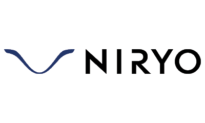
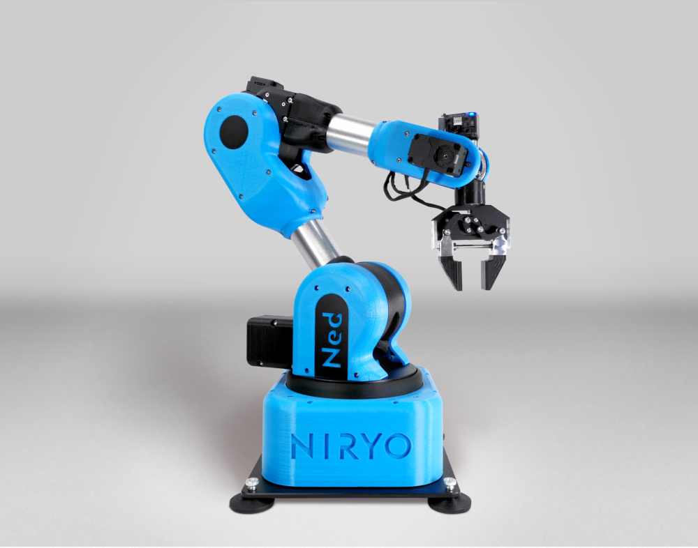
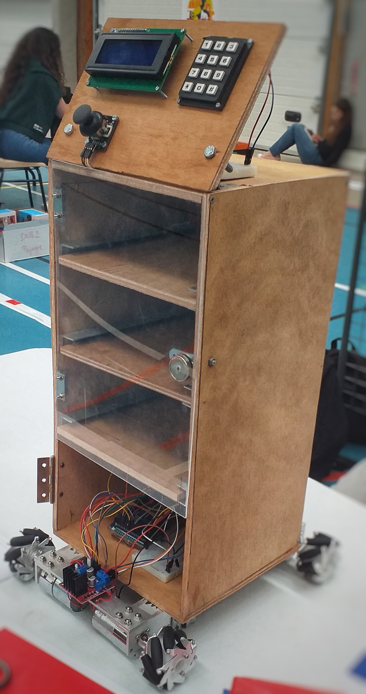
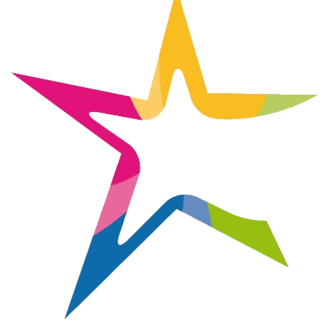
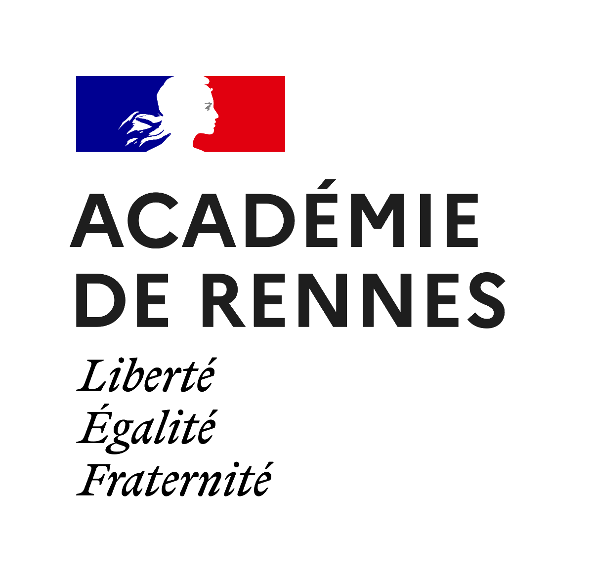
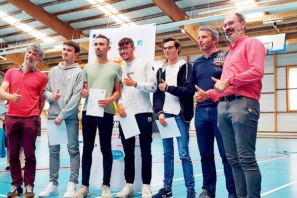

Nous avons réalisé en groupe un site Web de présentation bras robotisé Ned² de la société Niryo. La Croix-Rouge a récemment acquis plusieurs bras de ce modèle ce qui nous a permis de l'étudier en détail, son installation, ses possibilités et son fonctionnement. Il s'agit là d'un site Web statique ayant quelques fonctionnalités comme une traduction en anglaise de l'ensemble de ses pages, ou encore plus complexe, un carrousel dynamique d'images.



Le Baccalauréat de la filière STI2D propose une épreuve de conception durant 72h, puis une présentation évaluée de ce projet à un jury.
Notre équipe de projet réunissait 4 membres provenant de 3 spécialités de la STI2D : SIN (Systèmes d'Information et Numérique), ITEC (Innovation Technologique et Eco-Conception), EE (Energie et Environnement).
Avec ces membres, nous avons eu la qualification nécéssaire pour concevoir et réaliser un prototype de robot-serveur dans une démarche d'assistance aux restaurateurs et leur déficit de serveur.
Nous avons donc suivi des protocoles de réalisation de projet similaire à celles des professionnels: plannification, conception d'un Cahiers des Charges, réalisation d'un diagramme d'utilisation...
L'ensemble du groupe était impliqué dans le projet.
Pour ma part je me suis occupé de l'interface Homme-Machine entre le robot et le client ainsi que les actions possibles du robot
comme la prise de la commande du client et l'apport de cette commande à la table correspondante.
Notre robot est équipé d'un écran LCD (Liquid Crystal Display) permettant de communiquer avec l'utilisateur. D'un clavier matriciel ainsi que d'un joystick permettant à l'utilisateur d'intéragir avec le robot.
Il se déplace à l'aide de roues omnidirectionelles et se repère dans la salle à l'aide d'un capteur de couleur et de chemins tracés au sol.
Ce prototype nécéssite encore d'être amélioré quant à l'optimisation du code source, ou encore le respect des normes d'hygiène présentes dans un restaurant.

Notre équipe de projet du baccalauréat a été sélectionnée pour les 13e Olympiades des Sciences de L'ingénieur de 2022 à Dinan. Il s'agit d'une présentation rassemblant de nombreux projets pluritechnologiques élaborés par des lycéens provenant d'une filière STI2D ou de la spécialité Sciences de L'ingénieur. Durant 3 h, un Jury examine les projets exposés avant de remettre des prix. Nous avons donc présenté notre prototype de robot-serveur.

Conçu et Développé par Alexis Joncour
2023